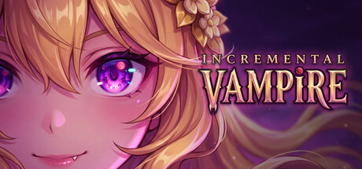

DESTINO / 01SURVIVOR INCREMENTAL
Incremental Vampire
Sobreviva às hordas, derrube chefões e volte mais forte na próxima run.
Ver na SteamCaderno de bordo / João
Eu testo modelos, faço jogos e registro o que aprendo no caminho. Este é o mapa do que saiu dessas noites.
Abrir o atlasCarta celeste · aguardando dados
01 O OBSERVATÓRIO
Na carta acima, cada estrela é uma medição. Aqui dá para comparar o que cada resultado custou e ver onde o desempenho compensa.
02 DESTINOS DO ATLAS
Quatro destinos para quando você cansar de olhar os números.

DESTINO / 01SURVIVOR INCREMENTAL
Sobreviva às hordas, derrube chefões e volte mais forte na próxima run.
Ver na Steam DESTINO / 02
DESTINO / 02ROGUELITE DE ARRANCADA
Monte seu carro com as peças que encontrar e desafie os chefes da costa para salvar a oficina.
Ver na Steam DESTINO / 03
DESTINO / 03TIRO EM PRIMEIRA PESSOA
Enfrente hordas numa zona tomada pela névoa, sozinho ou em co-op de até quatro pessoas.
Ver na SteamPINBALL PACHINKO
Faça as tesouras ricochetearem pelo tabuleiro, corte a erva e gaste o lucro em melhorias.
Ver na Steam03 QUEM FEZ O MAPA
Gosto de descobrir o que uma ideia vira quando sai do papel. Às vezes o resultado é um gráfico que me faz repensar um teste. Às vezes é um jogo que só começa a fazer sentido quando alguém pega o controle.
No YouTube eu mostro o que estou fazendo e deixo notas sobre o processo.